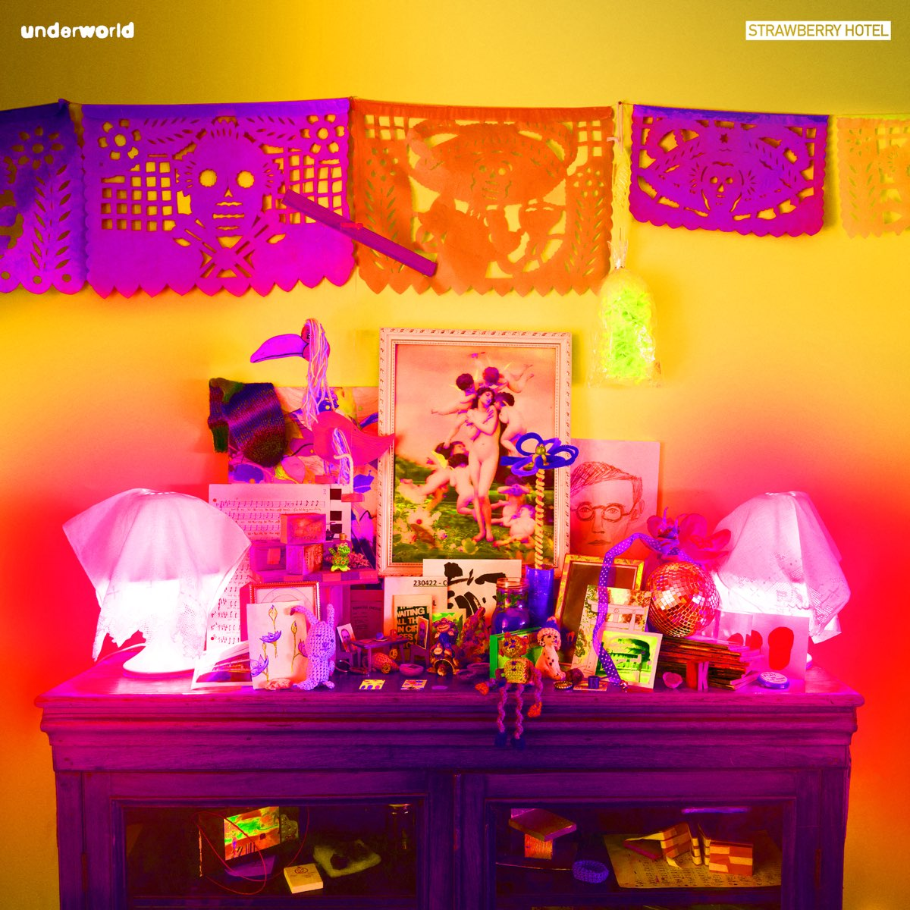

Jan. 23, 2025
An album that arrived a bit too late to be considered in the best of the year list, Strawberry Hotel by Underworld is a solid effort. Their 11th album, it remarks their return to the format after five years after the Drift series in 2019.
Drift had been an interesting experiment where Underworld had tried to put out a new track each week and grouping several weeks worth into EPs before putting out a massive 6+ hour box set. The striking thing about the project was that it was so good. They released a sampler edition of the album which cherry picked the best songs, but almost every track released as part of Drift could be swapped into that sampler.

And so the biggest surprise about Strawberry Hotel is how ordinary it sounds. At first it’s fine. It shambles out with a cute a capella track called “Black Poppies” before roaring into a series of techno bangers “Denver Luna”, “Techno Shinkansen”, “And the Colour Red” and “Sweet Lands Experience”. Each of these would fit nicely on the first four Underworld albums and makes for a very propulsive start.
After that though, it does go a bit wibbly. There was an attempt to be as experimental as they were on the more casual projects like Drift and the Riverrun Project (why has there never been a nice box for this one guys?) but some of them don’t really pay off. One of the more successful experiments is “Ottavia” where Rick’s daughter reads a lament of Nero’s wife in an English translation of the Italian opera “L’Incoronazione di Poppea”. This is willfully odd but does grow on you with repeat listens.
Another highlight of the back half of the album is “Gene Pool”, one of their seemingly effortless long and twinkly instrumentals. But tracks like “Oh Thorn!” and “Iron Bones” don’t really work for me. Perhaps they will grow on me like the middle of the album did.
In conclusion, it’s a good album that perhaps pales in comparison to the highest highs of the Underworld catalogue. I think the best comparison is probably to Oblivion with Bells, an album that also begins with a few bangers (“Crocodile”, “Beautiful Burnout”), goes a bit weird in the middle (“Ring Road”, “Holding the Moth”, “Cuddle Bunny Vs Celtic Villages”) and rallying a bit at the end (“Best Mamgu Ever”).